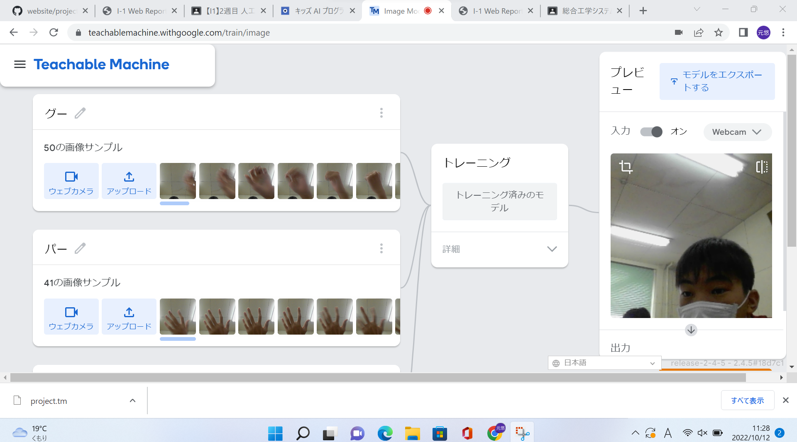

第2週目
2-1 レポートをHTMLで作る
１週目のレポート
1.内容
受けた授業のレポートを自分でhtmlを作って編集する。
2.感想
初めて作ったときは説明を聞いてもわからなくて、つきっきりで教えてもらってやっとでしたが最後には方法もしっかりと理解して作ることができるようになりました。
2-2 機械学習体験

1.内容
コンピューターに自分の手の形を読み込ませてじゃんけんをする。
2.感想
画像からコンピューターが手の形を読み取っていて驚きました。私は知能情報コースに入りたいと思っているので、こういったコンピューターの仕組みをより知りたいと思えてよかったです。
2-3 VR体験：バーチャル会議室の体験
1.内容
VRゴーグルを着けてVR空間に入り、バーチャル会議室の体験をする。
2.感想
VR空間は夢のような話だと思っていたけど、実際に体験してどのように活用できるかなど考えることができて興味を持てたので体験してよかったです。そして、楽しかったです。